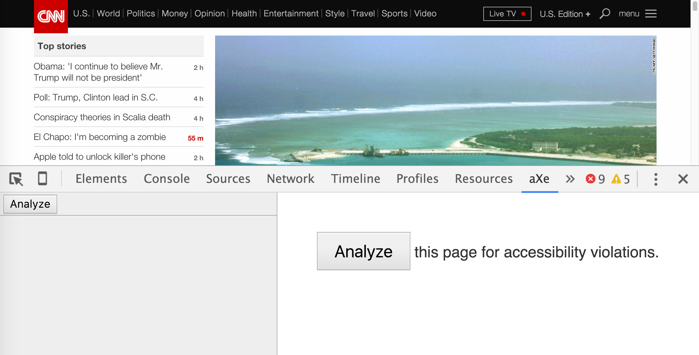
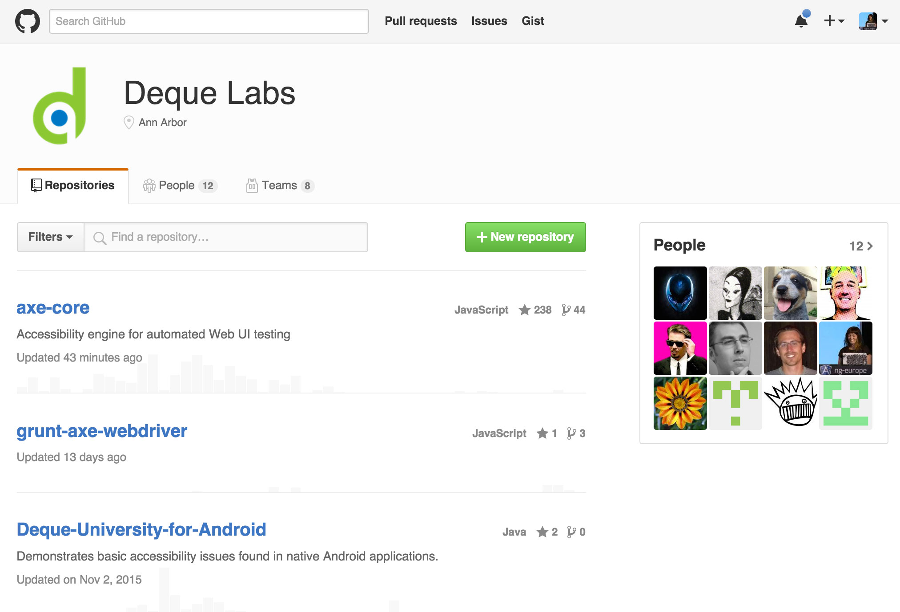

Accessible JavaScript
Created by Marcy Sutton / @marcysutton
Senior Front-End Engineer, Deque Systems
Oh hai!


Remember the old days?
- Flash and keyboard navigation
- Screen readers and JavaScript
- Page reloads for data interactions
- Car phones in Miatas
The Web has evolved. Yay!
How do we not repeat the same mistakes?
What is accessibility?
W3.org
The Web is fundamentally designed to work for all people, whatever their hardware, software, language, culture, location, or physical or mental ability.
Who are we talking about?
- Blind & Low Vision
- Color-Blind
- Deaf & Hard of Hearing
- Impaired Mobility
- Cognitive/Learning
- AND EVERYONE ELSE
Problematic Items
- The presence of inaccessible Flash content
- CAPTCHA - images presenting text used to verify that you are a human user
- Links or buttons that do not make sense
- Images with missing or improper descriptions (alt text)
- Screens or parts of screens that change unexpectedly
- Complex or difficult forms
- Lack of keyboard accessibility
- Missing or improper headings
- Too many links or navigation items
- Complex data tables
- Inaccessible or missing search functionality
- Lack of "skip to main content" or "skip navigation" links
Problematic Items…Updated
- Icon buttons without text
- Unlabeled form controls
- Click events on DIVs
- Dropping keyboard focus
- Too subtle color contrast
Web pages are more than
just visible
- Semantic HTML markup
- Headings
- Landmark roles
- Form labels
- Image alt text
- Visually hidden text
WAI-ARIA
Web Accessibility Initiative -
Accessible Rich Internet Applications
A standard set of HTML attributes for applying accessible roles, states and properties–
Creating accessible actions
<a ng-href="#/wrong-trousers"></a>
<button ng-click="start()">
<i class="icon"></i>
</button>
<a ng-href="#/wrong-trousers">Techno-Trousers</a>
<button ng-click="start()">
<i class="icon" aria-label="Start Morning Routine"></i>
</button>
Creating accessible actions(cont'd)
<a ng-href="#/wrong-trousers"></a>
<button ng-click="start()">
<i class="icon"></i>
</button>
<a ng-href="the-wrong-trousers.html">Techno-Trousers</a>
<button ng-click="start()">
<span class="visuallyhidden">Start Morning Routine</span>
<i class="icon" aria-hidden="true"></i>
</button>
“Hidden” vs. “Offscreen”
CSS
.reallyHidden {
display: none;
visibility: hidden;
}
.visuallyhidden {
border: 0;
clip: rect(0 0 0 0);
height: 1px;
margin: -1px;
overflow: hidden;
padding: 0;
position: absolute;
width: 1px;
}
Keyboard navigation
Any element can receive focus with a little help.
<div class="nav-right" tabindex="0" role="button">
Next Slide
</div>
$('.nav-right').on 'click keydown', (event) ->
if event.type === 'click' || event.keyCode === 13
navRightClicked()
Skip Links
Skip Links
Useful for everyone. Make them visible on focus:
$('.skip-links').find('a').on 'focus blur click', ($event) ->
$(this).css({'left':'0'}) if $event.type == 'focus'
$(this).css({'left':'-999999px'}) if $event.type == 'blur'
if $event.type == 'click'
$event.preventDefault()
$(this).attr('href').focus()
Testing for Accessibility
We can achieve digital equality by making accessibility part of our web development workflow.
Hi aXe-core
- Browser extensions
- Unit test integration
- Selenium Webdriver integration
aXe Chrome Extension
Unit Test Integration
describe('Form component', function () {
'use strict';
document.getElementsByTagName('body')[0].insertAdjacentHTML('beforeend',
'');
it('should report that HTML is good', function (done) {
var n = document.getElementById('username');
axe.a11yCheck(n, null, function (result) {
expect(result.violations.length).toBe(0);
done();
});
});
Webdriver Integration
var selenium = require('selenium-webdriver'),
AxeBuilder = require('axe-webdriverjs');
describe('Selenium-aXe Tutorial', function() {
beforeEach(function(done) {
this.driver = new selenium.Builder()
.forBrowser('firefox').build();
this.driver
.get('http://www.deque.com/')
.then(function() { done(); });
});
afterEach(function() {
this.driver.quit();
});
it('Should have no accessibility violations', function(done) {
AxeBuilder(this.driver)
.analyze(function(results) {
expect(results.violations.length).toBe(0);
done();
})
});
});
https://github.com/marcysutton/axe-webdriverjs-demo
Learn more on Github
Mobile
@marcysutton iPhone was the 1ST piece of tech I could use out of the box. Normally need sighted help to get screen reader installed etc.
— Steve Sawczyn (@steveofmaine) October 11, 2013
@marcysutton If you think about it, I can't even buy and use a microwave until someone helps me label touchpad.
— Steve Sawczyn (@steveofmaine) October 11, 2013
Should your mobile site
be accessible?
What else?
- Transcripts & Captions
- Captcha Alternatives
- Progressive Enhancement
It’s About User Experience.
We can make it better.